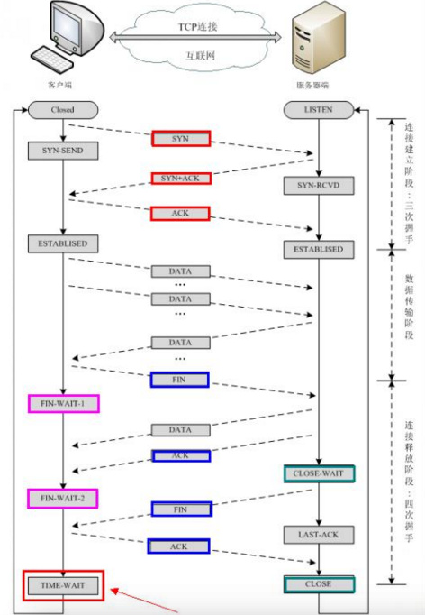

今天遇到一个问题， 关于发现很多timeout ，于是简单了解了一下。
这个是发起端，
客户端先发送FIN，进入FIN_WAIT1状态
服务端收到FIN，发送ACK，进入CLOSE_WAIT状态，客户端收到这个ACK，进入FIN_WAIT2状态
服务端发送FIN，进入LAST_ACK状态
客户端收到FIN，发送ACK，进入TIME_WAIT状态，服务端收到ACK，进入CLOSE状态
客户端TIME_WAIT持续2倍MSL时长，在linux体系中大概是60s，转换成CLOSE状态


那么这个感觉就有点奇怪了，HTTP服务并没有依赖外部mysql或者redis等服务，就是一个简单的Hello world，而TIME_WAIT的是主动断开方才会出现的，所以主动断开方是服务端？
答案是是的。在HTTP1.1协议中，有个 Connection 头，Connection有两个值，close和keep-alive，这个头就相当于客户端告诉服务端，服务端你执行完成请求之后，是关闭连接还是保持连接，保持连接就意味着在保持连接期间，只能由客户端主动断开连接。还有一个keep-alive的头，设置的值就代表了服务端保持连接保持多久。
HTTP默认的Connection值为close，那么就意味着关闭请求的一方几乎都会是由服务端这边发起的。那么这个服务端产生TIME_WAIT过多的情况就很正常了。
refert